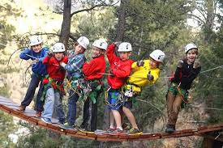

-
Sailing Camp
Go sailing this summer! St Augustine Yacht Club has beginner, intermediate, and advanced sailing classes.Classes are divided by age and skill ability and are taught by US Sailing Certified Instructors.
-
Outdoor Adventure Camp
Ocala Adventure camp is located on a 57-acre peninsula rich in history and wildlife. The "OAC" provides campers with the necessary skills and knowledge to become better sportsmen and women, while instilling an awareness of firearm safety and wildlife stewardship. Facilities are rustic, yet comfortable, with air-conditioned cabins and dining hall.
-

Wilderness Camp
At Camp Illawah your child will get to go horseback riding, ziplining and travel deep into Florida's natural habitat on trail buggies. Camp Illahaw is a coed, sleep-away camp for ages 9-15.
-
Scuba Camp
Whether you’re interested in scuba diving, sailing, marine science or an all-around summer program, you’ve come to the right spot! SeaTrek offers tropical adventure summer camp programs for junior high through college-aged students. We sail around the British Virgin Islands and other islands throughout the Caribbean.